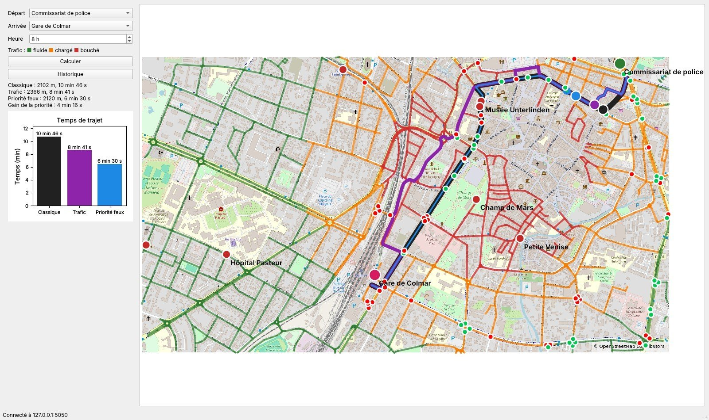
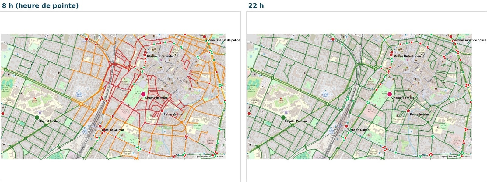
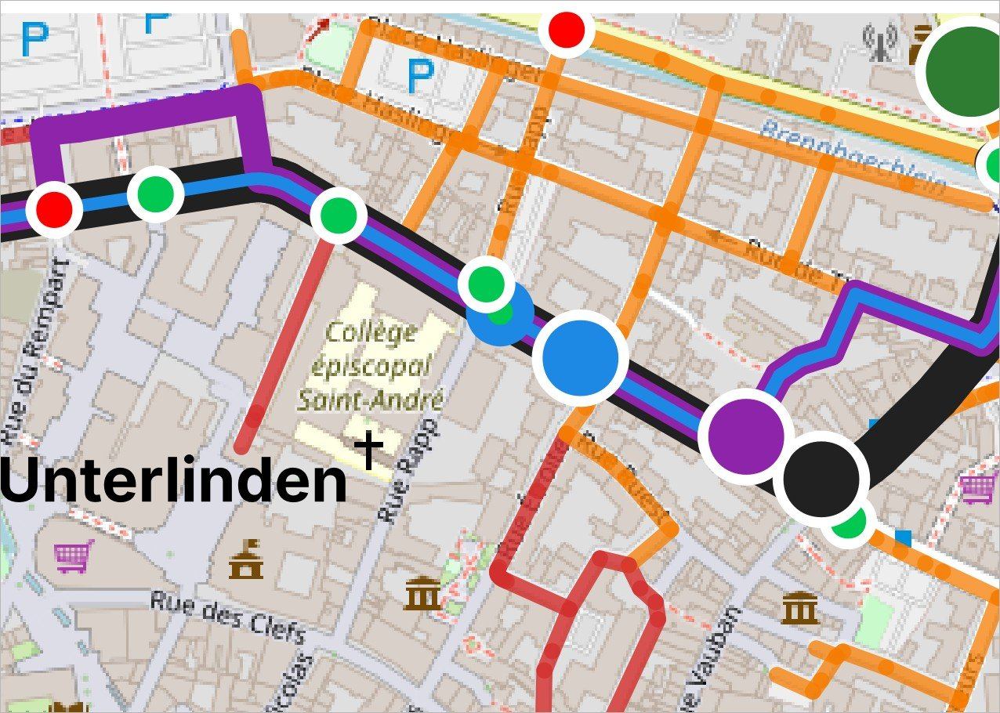
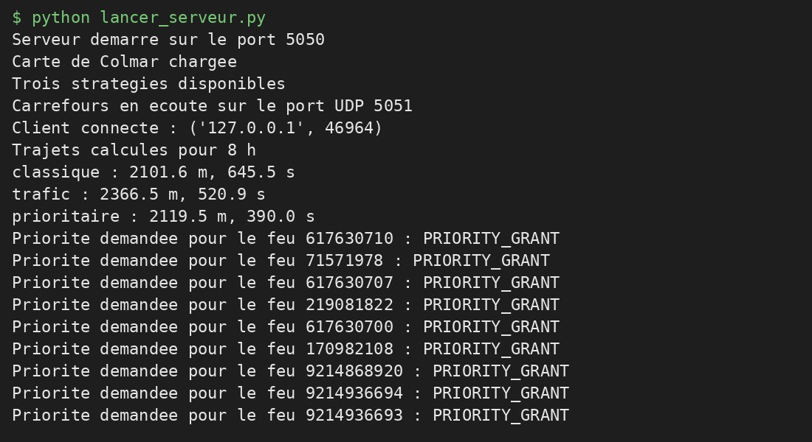
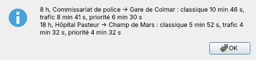
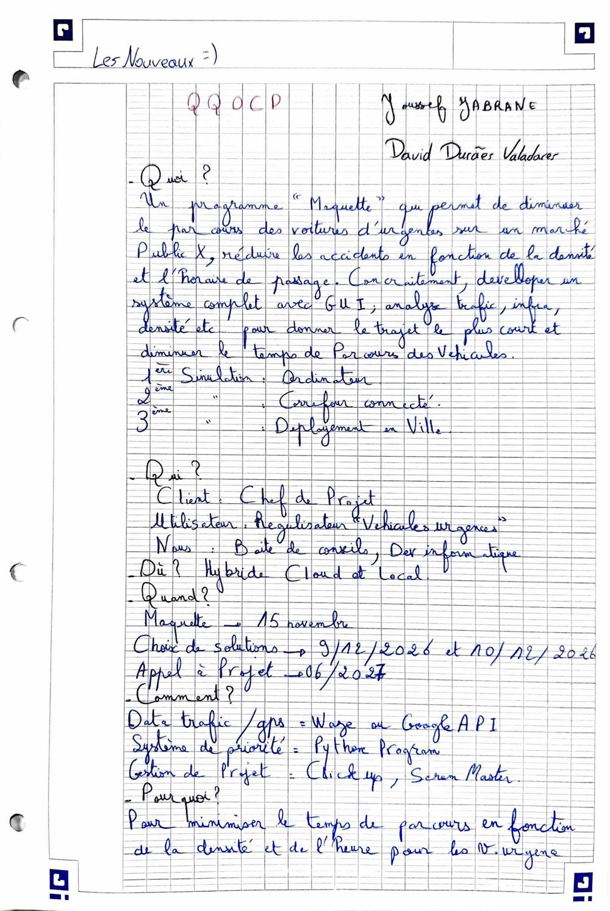
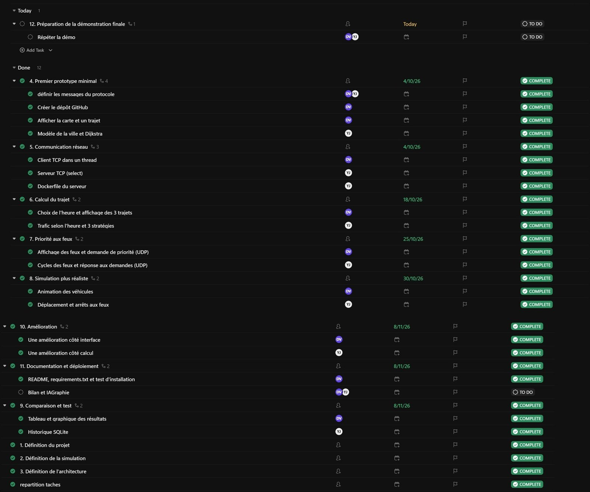
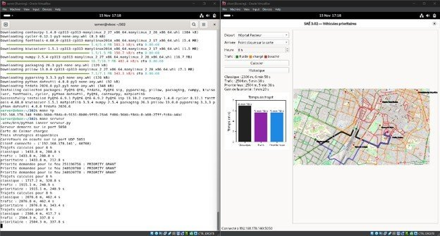
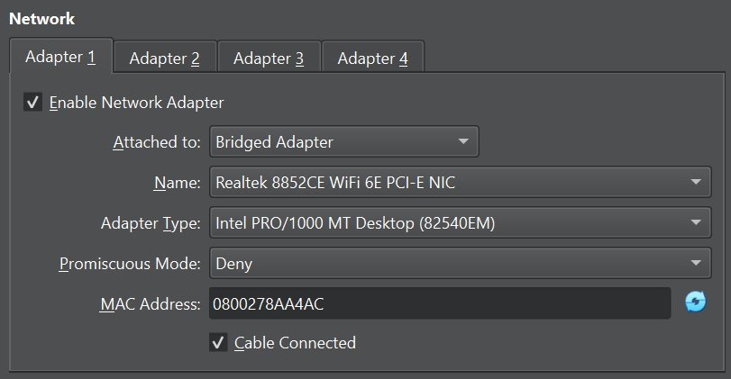
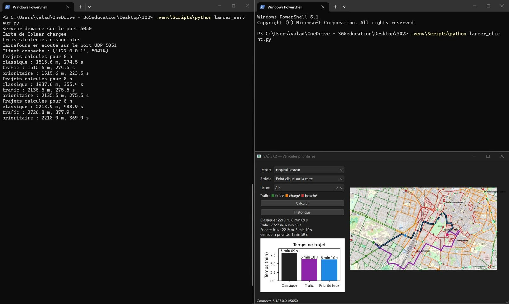

Le projet
Lors d'une intervention, une ambulance ou un camion de pompiers perd du temps dans le trafic et aux feux rouges. Dans la SAÉ 3.02, nous jouons le rôle d'un cabinet de développement sollicité par une ville : elle veut une maquette logicielle qui montre combien de temps un véhicule d'urgence peut gagner grâce à un meilleur itinéraire et à la priorité aux feux, avant d'envisager un déploiement réel.
Notre application, développée en binôme avec Youssef Jabrane, calcule et compare trois itinéraires sur le réseau routier réel du centre de Colmar : le trajet classique (le plus court), le trajet adapté au trafic selon l'heure, et le trajet avec priorité aux feux, où le véhicule demande le vert aux carrefours à son approche. Les trois véhicules sont animés sur la carte et leurs temps sont comparés.
Ma partie : le client (interface, animation, communication réseau), la carte réelle de Colmar (extraction depuis OpenStreetMap et transformation en réseau de rues utilisable), un faux serveur pour tester pendant le développement, puis l'intégration du vrai serveur et le déploiement. Youssef : le serveur (graphe de la ville, calcul des trois itinéraires avec Dijkstra, sens uniques). En fin de projet, j'ai corrigé son serveur pour qu'il respecte notre protocole commun, puis testé l'ensemble sous Windows et sur deux machines virtuelles Linux.
Rendu final du 15/11/2026 : dépôt GitHub du projet, bilan du projet et IAGraphie.
Architecture
Compétences travaillées
| Compétence du BUT R&T | Apprentissages critiques (AC) |
|---|---|
| Programmer : Créer des outils et applications informatiques pour les R&T | AC23.03, AC23.02, AC23.05 |
| Connecter : Connecter les entreprises et les usagers | AC22.05 |
| Administrer : Administrer les réseaux et l'Internet | AC21.06, AC21.032 |
1 Intitulés des compétences et des AC recopiés du Programme national du BUT Réseaux & Télécommunications (ministère de l'Enseignement supérieur, 2022, annexe 22 ; version en ligne) : compétences de niveau 2 et fiche « SAÉ 3.02 : Développer des applications communicantes », p. 118. Le niveau 2 correspond aux compétences visées en deuxième année de BUT.
2 La fiche officielle de la SAÉ 3.02 cible AC21.06, AC22.05, AC23.02, AC23.03, AC23.04 et AC23.05. J'ajoute AC21.03 parce que le déploiement sur machines virtuelles faisait partie de mon travail. Je ne revendique pas AC23.04 (installer et administrer la base de données), qui relève de la partie serveur.
Programmer
Compétence « Créer des outils et applications informatiques pour les R&T » · niveau 2 (BUT 2)
J'ai développé le client de l'application en suivant notre cahier des charges (rendu le 24/09/2026). Le sujet imposait trois contraintes :
- une interface en PyQt6 ;
- une communication écrite directement avec les sockets de Python ;
- une règle de sécurité sur les threads. Un thread est une tâche qui tourne en parallèle de la fenêtre, ici pour écouter le réseau. Il n'a pas le droit de modifier la fenêtre lui-même, car Qt n'est pas prévu pour ça et l'application peut planter. Il envoie un signal (« un message est arrivé »), et c'est la fenêtre qui se met à jour.
Concrètement, j'ai écrit l'interface et la carte (client/fenetre.py, client/carte.py), la partie réseau (client/reseau.py), un faux serveur pour tester sans attendre le vrai, et l'outil qui extrait la carte de Colmar depuis OpenStreetMap. À la fin, j'ai branché le client sur le vrai serveur de Youssef (serveur/serveur_test.py) et corrigé ce serveur là où ses messages ne suivaient pas le protocole.
Utiliser un protocole réseau pour programmer une application client/serveur
Le sujet interdisait les bibliothèques qui gèrent le réseau à notre place : il fallait tout écrire avec les sockets. J'ai donc programmé moi-même la connexion, la découpe des messages et la gestion des erreurs.
- En TCP, les données arrivent en continu, sans séparation entre les messages : une lecture peut contenir la moitié d'un message, ou deux messages collés. Nous avons donc terminé chaque message JSON par un retour à la ligne, et le client recolle les morceaux jusqu'à trouver ce retour à la ligne.
- En UDP, il n'y a pas de connexion : chaque message part seul, dans un paquet (un « datagramme »). Il arrive entier ou pas du tout, donc pas besoin de séparateur. En revanche, UDP ne renvoie rien en cas de perte : l'application doit continuer même si une demande se perd.
- Pourquoi pas tout en TCP ? Pour le serveur, TCP est le bon choix : la carte et les trajets doivent arriver en entier. Pour les feux, UDP colle mieux à la situation : le véhicule envoie une courte demande à chaque carrefour qu'il approche, et il y a 86 feux sur la carte. En TCP, il faudrait ouvrir une connexion avec chaque carrefour pour un seul message. Et si une demande se perd, une réponse en retard ne sert plus à rien une fois le carrefour passé.
- Ce principe existe déjà : dans les systèmes de transport coopératifs (C-ITS), le véhicule d'urgence envoie une demande de priorité au carrefour, qui lui répond et peut passer le feu au vert. C'est la communication véhicule-infrastructure, ou V2I. Ce cas d'usage, « Emergency Vehicle Approach », est décrit par le CAR 2 CAR Communication Consortium (consortium européen de constructeurs, p. 17), et la Flandre l'utilise sur ses carrefours (documentation Mobilidata du message SREM). Notre maquette reprend ce principe en version simplifiée, avec nos propres messages JSON
PRIORITY_REQUESTetPRIORITY_GRANT.
Développer une application à partir d’un cahier des charges donné, pour le Web ou les périphériques mobiles
Toutes les fonctionnalités du client viennent du tableau des priorités de notre cahier des charges (voir le tableau MoSCoW plus bas). À mi-parcours, j'ai repris ce tableau ligne par ligne pour vérifier ce qui était fini. Cet AC parle d'applications Web ou mobiles, alors que la nôtre est une application pour ordinateur. Ici, c'est la démarche qui correspond : partir du cahier des charges.
Accéder à un ensemble de données depuis une application et/ou un site web
Le bouton Historique du client affiche les dernières simulations enregistrées. Le client ne lit pas la base lui-même : il envoie la demande GET_HISTORY au serveur, qui interroge sa base SQLite et renvoie les résultats (HISTORY). Chaque calcul de trajet y est enregistré par le serveur (voir la fig. 5).
Démarche
J'ai avancé par petites étapes, en testant chacune avant de passer à la suivante. J'ai commencé par une carte de test très simple : une grille de 36 carrefours nommés de A1 à F6, sur laquelle je traçais un trajet donné (par exemple A1 → A2 → B2) pour vérifier l'affichage. Après une remarque de l'enseignant à toute la classe sur le manque d'originalité des projets, j'ai décidé de remplacer cette grille par la vraie carte de Colmar. Ensuite sont venus la connexion au serveur, les trois trajets, les feux, l'animation, et enfin les demandes de feu vert.
Comme le serveur de Youssef n'était pas encore adapté à la carte de Colmar, j'ai écrit un faux serveur qui répond aux mêmes messages que le vrai. Il m'a servi à tester le client, et à montrer à Youssef les messages que le client attendait. Le 15/11, j'ai remplacé le faux serveur par le vrai : le client recevait bien la carte, mais « Calculer » affichait une erreur, car les noms et la structure de certains messages du serveur ne correspondaient pas au protocole. J'ai corrigé le serveur, puis supprimé le faux serveur du dépôt.
Problèmes rencontrés
| Problème | Cause | Ma solution |
|---|---|---|
| La fenêtre ne répondait plus (impossible de cliquer) pendant les échanges réseau | L'attente de données réseau bloque le programme tant que rien n'arrive | Mettre le réseau dans un thread séparé, qui prévient la fenêtre par un signal |
| L'application ne se fermait pas proprement | Le thread restait bloqué en attente de données | Vérifier toutes les 0,2 s s'il faut s'arrêter (select avec un délai) |
| Un message mal formé fermait toute l'application | Avec PyQt6, une erreur dans une fonction appelée par un signal arrête le programme | Intercepter l'erreur et afficher un message au lieu de planter |
| Erreurs UDP sous Windows | Windows refuse d'écouter une socket UDP non attachée à un port | Attacher la socket à un port libre choisi par le système |
| Passer de la grille de test à une vraie ville | Une carte réelle compte des milliers de rues, et les positions sont en coordonnées GPS, pas en mètres | Extraire le réseau routier de Colmar depuis OpenStreetMap (2 715 carrefours, 2 944 tronçons) et convertir les coordonnées GPS en mètres pour les dessiner |
| Avec le vrai serveur, « Calculer » renvoyait une erreur | Le serveur et le client avaient été développés chacun de leur côté : certains messages du serveur n'avaient pas les noms et la structure prévus par le protocole | Adapter le serveur au protocole commun (commun/protocole.py) |
Ce qui n'est pas parfait
- L'intégration est arrivée trop tard. Le client et le serveur n'ont été assemblés que le 15/11, le jour du rendu.
- Le gain de la priorité est calculé à l'avance. Le serveur calcule le temps du trajet « priorité » en supposant que tous les feux passeront au vert. Si un carrefour refusait la demande, le temps affiché ne changerait pas. Pourquoi : calculer les trois trajets d'un coup, avant l'animation, était le moyen le plus simple d'obtenir vite les trois temps à comparer. Faire dépendre le temps des vraies réponses aurait demandé une simulation en temps réel entre le serveur et les carrefours, que nous n'avons pas eu le temps de faire.
- La règle des feux est écrite deux fois. Le rythme des feux (30 s vert, 30 s rouge) est codé à la fois dans le client, pour l'affichage, et dans le serveur. Si l'un des deux change, l'écran ne correspond plus au calcul. Pourquoi : pendant l'animation, le client recolore les 86 feux plusieurs fois par seconde. Demander l'état de chaque feu au serveur à chaque fois aurait saturé le réseau, alors j'ai recopié la règle dans le client. La bonne solution serait que le serveur envoie la règle (durées et décalage de chaque feu) une seule fois, avec la carte.
- J'ai ajouté des messages avant de les valider à deux. Le client utilisait des messages (trafic, trajets multiples, historique…) qui n'étaient pas encore écrits dans le protocole commun. Ils n'y ont été documentés qu'à la fin, dans
commun/protocole.py. Nous aurions dû les ajouter ensemble au fur et à mesure.
Ce que j'en retiens
Avant ce projet, TCP et UDP étaient surtout des notions de cours. En codant moi-même, j'ai compris pourquoi TCP oblige à découper ses messages et pourquoi UDP est plus simple, mais sans garantie. J'ai aussi découvert la programmation avec plusieurs threads : c'est ce qui m'a posé le plus de problèmes. Enfin, le faux serveur m'a permis d'avancer sans attendre le serveur de Youssef.
Commits
J'ai travaillé sur la branche david/client, fusionnée dans main pour le rendu du 15/11.
| Date | Commit | Contenu |
|---|---|---|
| 30/09 | b52d161 | Structure du projet et contrat protocole |
| 05/10 | ab7a546 | Client étapes 4 et 5 : carte, fenêtre, réseau TCP, faux serveur |
| 05/10 | 456c129 | Simplification du client : suppression du mode hors ligne |
| 07/10 | c875157 | Makefile |
| 07/10 | f69e771 | Vraie carte de Colmar : extraction OSM, fond de carte, lieux, rues et clic sur la carte |
| 10/11 | adbf0a8 | Simplification du client, suppression de Grafana, guide d'installation Linux |
| 15/11 | 0a150d6 | Version finale du client et des docs : intégration du serveur de Youssef, protocole dans commun/, schémas |
| 15/11 | b70e117 | Version finale : fusion de david/client dans main |
Client TCP dans un thread
def run(self):
"""Code exécuté dans le thread (lancé par start())."""
try:
self.sock = socket.create_connection((self.hote, self.port), timeout=5)
except OSError as e:
self.erreur.emit(f"connexion impossible à {self.hote}:{self.port} ({e})")
return
self.connecte.emit()
deframeur = Deframeur()
try:
while self.actif:
# On attend au plus 0,2 s qu'il y ait quelque chose à lire,
# pour revérifier self.actif régulièrement (arrêt propre).
lisibles, _, _ = select.select([self.sock], [], [], 0.2)
if not lisibles:
continue
octets = self.sock.recv(4096)
if not octets: # b"" : le serveur a fermé la connexion
self.erreur.emit("le serveur a fermé la connexion")
break
for message in deframeur.alimenter(octets):
self.message_recu.emit(message)
except (OSError, ValueError) as e: # ValueError : message JSON invalide
self.erreur.emit(f"erreur réseau ({e})")
finally:
self.sock.close()client/reseau.py, classe ClientReseau. Le thread lit le réseau et ne touche jamais la fenêtre : il transmet chaque message par emit.
Envoi UDP au carrefour
def envoyer(self, message):
"""Envoie un datagramme (sans "\n" : UDP garde les frontières des messages)."""
try:
self.sock.sendto(json.dumps(message).encode("utf-8"), self.adresse)
except OSError:
pass # UDP ne garantit rien : un datagramme perdu n'arrête pas l'appliclient/reseau.py, classe ClientV2I
Traitement des messages reçus
def traiter_message(self, message):
"""Aiguille chaque message reçu selon son "type".
try : avec PyQt6, une erreur dans une méthode appelée par un signal FERME l'appli.
Un message incomplet (un champ qui manque...) affiche donc juste une erreur.
"""
try:
if message["type"] == "CITY":
self.afficher_ville(message)
elif message["type"] == "TRAFFIC":
self.carte.colorer_trafic(message["densites"])
elif message["type"] == "ROUTES":
self.afficher_routes(message)
elif message["type"] == "HISTORY":
self.afficher_historique(message["simulations"])
elif message["type"] == "ERROR":
self.afficher_erreur(message["raison"])
except (KeyError, ValueError, TypeError) as e:
self.afficher_erreur(f"message {message['type']} incomplet ({e})")client/fenetre.py (extrait)
L'application en fonctionnement
Version rendue le 15/11/2026, avec le vrai serveur. Scénario : Commissariat de police → Gare de Colmar à 8 h.


TRAFFIC) à 8 h, heure de pointe, et à 22 h : vert fluide, orange chargé, rouge bouché.

PRIORITY_REQUEST par feu, toutes accordées (PRIORITY_GRANT).
GET_HISTORY, le serveur lit sa base SQLite et renvoie les dernières simulations.Extrait de mon compte rendu (semaine 1)
« J'ai développé la partie réseau du client dans un QThread, pour que la fenêtre ne se bloque pas pendant les échanges avec le serveur. […] j'ai connecté le client au serveur de Youssef en local sur l'adresse 127.0.0.1:5050. Le client a envoyé le message {"type": "GET_CITY"} et la réponse du serveur a bien été reçue par le client. »
Connecter
Compétence « Connecter les entreprises et les usagers » · niveau 2 (BUT 2)
Du 24/09 au 15/11/2026, nous avons joué le rôle d'un cabinet qui répond à la demande d'une ville. Il fallait écrire le cahier des charges, se répartir le travail et suivre l'avancement.
Capacité à questionner un cahier des charges RT
J'ai remis en question le cahier des charges à trois moments :
- Au départ : nous avons analysé le besoin avec un QQOQCP (Qui ? Quoi ? Où ? Quand ? Comment ? Pourquoi ?), puis classé les fonctionnalités par priorité avec la méthode MoSCoW et estimé le temps de chacune.
- En cours de route : après une remarque de l'enseignant à toute la classe sur l'originalité des projets, j'ai proposé de remplacer la grille de test par la vraie carte de Colmar, et soulevé des questions que le cahier des charges ne réglait pas (une ambulance peut-elle prendre un sens unique à contresens ?).
- À mi-parcours : le 14/10, j'ai comparé chaque ligne du cahier des charges avec le code réel, pour savoir ce qui était fini, partiel ou manquant.
- Répartition : le client pour moi, le serveur pour Youssef. Le protocole (la liste des messages échangés) est le seul fichier écrit à deux.
- Changement de périmètre : le cahier des charges prévoyait un « Déploiement dans une ville » (priorité Should). En passant à la carte de Colmar, nous l'avons fait plus tôt que prévu.
- Avancement inégal : à mi-parcours, le client était en avance mais le serveur de Youssef ne fonctionnait pas encore sur la carte de Colmar. J'ai écrit un faux serveur et proposé par écrit à Youssef les nouveaux messages dont le client avait besoin. Je les ai utilisés avant qu'on les valide ensemble.
- Intégration tardive : le client et le serveur n'ont été assemblés que le 15/11, le jour du rendu. Les jalons « Client / serveur » et « 3 trajets comparés » n'ont donc été atteints avec le vrai serveur qu'à la fin, avec environ 4 à 6 semaines de retard sur le planning. Il aurait fallu tester nos deux programmes ensemble chaque semaine.
Les priorités du cahier des charges (méthode MoSCoW)
Must indispensable · Should important · Could bonus. Complexité de 1 à 5, coût estimé en heures.
| Fonctionnalité | Priorité | Complexité | Coût | Côté |
|---|---|---|---|---|
| Interface graphique principale | Must | 5 h | client | |
| Affichage des routes et intersections | Must | 8 h | client | |
| Simulation du véhicule d'urgence | Must | 8 h | les deux | |
| Simulation du trafic | Must | 7 h | les deux | |
| Calcul d'un itinéraire | Must | 10 h | serveur | |
| Communication client / serveur par socket | Must | 10 h | les deux | |
| Échange des données au format JSON | Must | 4 h | les deux | |
| Gestion des communications avec threads | Must | 8 h | les deux | |
| Simulation des feux de circulation | Should | 6 h | les deux | |
| Contrôle des feux pour le véhicule prioritaire | Should | 8 h | les deux | |
| Comparaison des trois temps de trajet | Should | 5 h | client | |
| Déploiement dans une ville | Should | 10 h | les deux | |
| Statistiques / graphiques supplémentaires | Could | 5 h | les deux | |
| Charge totale estimée | 94 h, soit environ 47 h chacun | |||
Tableau recopié de notre cahier des charges (partie 3). La colonne « Côté » est ajoutée ici pour montrer ma part.
Les étapes prévues
- Jalon 1Cahier des charges 24/09/2026
- Jalon 2Première interface
- Jalon 3Routes, véhicule, trafic
- Jalon 4Client / serveur
- Jalon 53 trajets comparés
- Jalon 6Tests et corrections
- Jalon 7Rendu final 15/11/2026
Réalisé : jalons 1 à 3 à l'heure (interface, réseau TCP et carte de Colmar en place du 05 au 07/10, grâce au faux serveur) ; jalons 4 et 5 atteints avec le vrai serveur le 15/11 ; tests sur deux VM Linux et sous Windows les 14 et 15/11 ; rendu à l'heure.
Analyse du besoin (QQOQCP)

Bilan à mi-parcours (14/10/2026)
« Côté client (David) : presque tout ce que le cahier des charges promet est déjà visible à l'écran : carte, 3 trajets, animation, feux, priorité UDP, graphique, historique. »
Suivi dans ClickUp

Temps relevés dans nos comptes rendus hebdomadaires
| Compte rendu | Période | Temps | Contenu principal |
|---|---|---|---|
| 1 | 07/09 - 13/09 | 3 h 15 | Découverte du sujet, organisation (ClickUp, Discord) |
| 2 | 14/09 - 20/09 | 3 h 15 | Installation de Python, prise en main de Git et GitHub |
| 3 | 22/09 - 04/10 | 13 h 00 | Carte PyQt6, protocole JSON, client réseau (moi) ; ville, Dijkstra, serveur TCP (Youssef) |
| 4 | 05/10 - 30/10 | 16 h 15 | Carte de Colmar, trois trajets, animation, feux, UDP (moi) ; serveur sur la carte de Colmar, sens uniques (Youssef) |
| 5 | 31/10 - 15/11 | 12 h 40 | Simplification, installation sur VM, intégration du serveur, documentation |
Source : bilan du projet, partie 4.
Administrer
Compétence « Administrer les réseaux et l'Internet » · niveau 2 (BUT 2)
Pour la démonstration finale, l'application doit tourner sur deux machines : le serveur sur l'une, le client sur l'autre. Je me suis occupé de l'installation, sous Windows et sur des machines virtuelles Linux.
Travailler en équipe pour développer ses compétences professionnelles
Nous avions chacun notre branche Git et un fichier commun, le protocole JSON. J'ai donné à Youssef le faux serveur comme modèle de ce que le client attendait, et je lui ai proposé les nouveaux messages par écrit. Nous faisions deux points d'avancement par semaine sur Discord et suivions les tâches dans ClickUp. Au moment d'assembler les deux parties, le serveur de Youssef ne respectait pas entièrement le protocole : j'ai adapté le serveur, puis j'ai fait les tests d'intégration sous Windows et sur deux machines virtuelles Linux.
Déployer des postes clients et des solutions virtualisées adaptées à une situation donnée
J'ai installé l'application sur deux machines virtuelles Linux (Debian 13), une pour le serveur et une pour le client, avec le client lancé vers l'adresse IP du serveur. Sur mes machines, l'ensemble fonctionne (voir la fig. 8) ; la recette avec les enseignants a lieu lors de la soutenance.2
Ce que j'ai fait
J'ai écrit un Makefile : un fichier qui regroupe toutes les commandes du projet. Par exemple : make installer installe tout, make serveur lance le serveur, et make client HOTE=192.168.56.10 lance le client vers un serveur sur une autre machine. Le même Makefile fonctionne sous Windows et sous Linux. Pour la VM client, make installer-client ajoute les bibliothèques dont Qt a besoin pour ouvrir une fenêtre, et make ip affiche l'adresse à donner au client. Avant l'installation, un petit script vérifie la version de Python.
J'ai aussi rédigé la documentation d'installation : le README pour deux VM, une installation sans make, une installation sous Windows et une page d'erreurs fréquentes.
Difficultés
| Difficulté | Ce que j'ai fait |
|---|---|
Windows et Linux n'utilisent pas les mêmes chemins ni les mêmes commandes (par exemple ipconfig contre hostname -I) | Le Makefile détecte le système et choisit automatiquement les bonnes commandes |
| Sur la machine virtuelle Linux, PyQt6 ne démarrait pas : il manquait des bibliothèques du système (erreur « Could not load the Qt platform plugin "xcb" ») | Je les ai identifiées (libxcb-cursor0, libxkbcommon-x11-0, libxcb-icccm4…) et regroupées dans make installer-client |
Sur Debian, mon compte n'avait pas le droit d'utiliser sudo (« not in the sudoers file ») | Ajouter le compte au groupe sudo depuis root (usermod -aG sudo), et l'expliquer dans le README |
| L'environnement Python du projet était cassé sur mon poste | Je l'ai recréé et j'ai noté les versions exactes des bibliothèques dans requirements.txt, pour que tout le monde installe les mêmes |
| Faire communiquer deux machines virtuelles : les deux VM doivent se voir pour que le client joigne le serveur sur TCP 5050 et UDP 5051 | Carte réseau VirtualBox en mode pont à la maison (fig. 9), ou NAT plus réseau privé hôte à l'école, où le pont est souvent bloqué. Vérification avec ping, et ouverture des ports avec ufw si le pare-feu est actif |
# Adresse IP de la machine qui fait tourner le serveur
# Changez-la ici une fois, ou donnez-la au lancement : make client HOTE=192.168.56.10
HOTE = 127.0.0.1
ifeq ($(OS),Windows_NT)
PYTHON_SYSTEME = python
PYTHON = .venv/Scripts/python.exe
AFFICHER_IP = ipconfig
else
PYTHON_SYSTEME = python3
PYTHON = .venv/bin/python
AFFICHER_IP = hostname -I
endif
installer:
@$(PYTHON_SYSTEME) outils/verifier_python.py
$(PYTHON_SYSTEME) -m venv .venv
$(PYTHON) -m pip install -r requirements.txtMakefile (extrait) : le même fichier choisit les bonnes commandes selon le système.

make serveur, écoute UDP sur le port 5051, client connecté depuis l'adresse de la VM client, trajets calculés et priorités accordées. À droite, la VM client : les trois trajets et « Connecté à 192.168…:5050 ».

Bilan
À COMPLÉTER